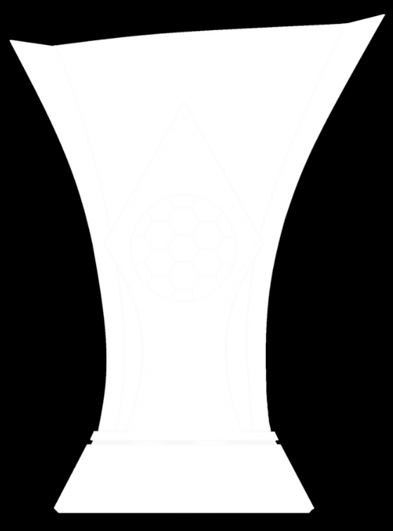
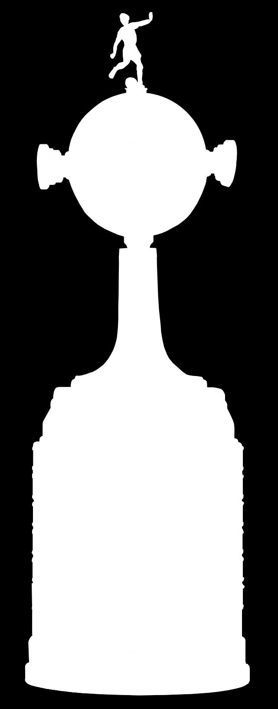
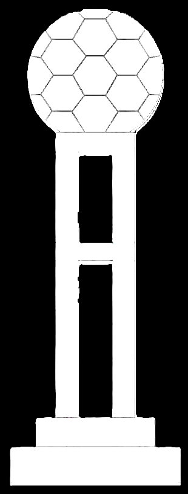
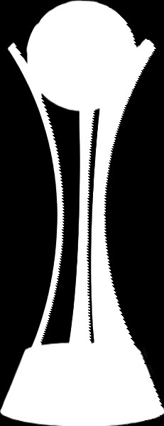

Futebol Masculino:
Campeonato Paulista
Anos de conquista: 1914, 1916, 1922, 1923, 1924, 1928, 1929, 1930, 1937, 1938, 1939, 1941, 1951,
1952, 1954, 1977, 1979, 1982, 1983, 1988, 1995, 1997, 1999, 2001, 2003, 2009, 2013, 2017, 2018 e
2019
Campeonato Brasileiro Segunda Divisão: Série B
Anos de conquista: 2008
Torneio Rio-SP
Anos de conquista: 1950, 1953, 1954, 1966 e 2002

SuperCopa do Brasil
Anos de conquista: 1991
Copa do Brasil
Anos de conquista: 1995, 2002 e 2009

Campeonato Brasileiro
Anos de conquista: 1990, 1998, 1999, 2005, 2011, 2015 e 2017

Copa Libertadores da América
Anos de conquista: 2012

Mundial de Clubes
Anos de conquista: 2000 e 2012


Futebol Feminino:
Campeonato Paulista
Anos de conquista: 2019, 2020, 2021 e 2023
Copa Paulista
Anos de conquista: 2022
SuperCopa do Brasil
Anos de conquista: 2022, 2023 e 2024
Copa do Brasil
Anos de conquista: 2016
Campeonato Brasileiro
Anos de conquista: 2018, 2020, 2021, 2022 e 2023
Copa Libertadores da América
Anos de conquista: 2017, 2019, 2021 e 2023